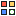

Clock faces
New faces to install, plus the 8 that ship with the firmware. Previews are the clock's screen at real size (240×240), rendered by the same drawing engine as the firmware and scaled up pixel by pixel. Tap one to see it bigger.
New, ready to install
Each one is a .json file of a few KB, described in layers (shapes, text, pixel art sprites, weather icon, clock hands). Like the built-in faces, they show the time, the weather and your focus sessions for the day. Dates on the clock appear in Portuguese.
Loading…
How to install a new face
Pick
Find a face here in the gallery.
Install
In the clock's panel, open Relógio → Mais mostradores → Ver a galeria online (Clock → More faces → Online gallery) and tap it. Or tap Download .json here and use Instalar de um arquivo (Install from a file) in the panel.
Use
The face joins the clock's list next to the built-in ones, with no reflashing.
.json here and use Instalar de um arquivo.Why not install straight from here? The clock only speaks http on your local network, and an https site can't send files to it. So installing starts from the clock's panel.
Built into the firmware
Pick one in the clock's panel; "Ver no relógio" (show on clock) displays it for 15 seconds without saving.

Make your own
A clock face is just a JSON file with layers. Take one of these as a template, change colors and positions and send it to the catalog on GitHub.